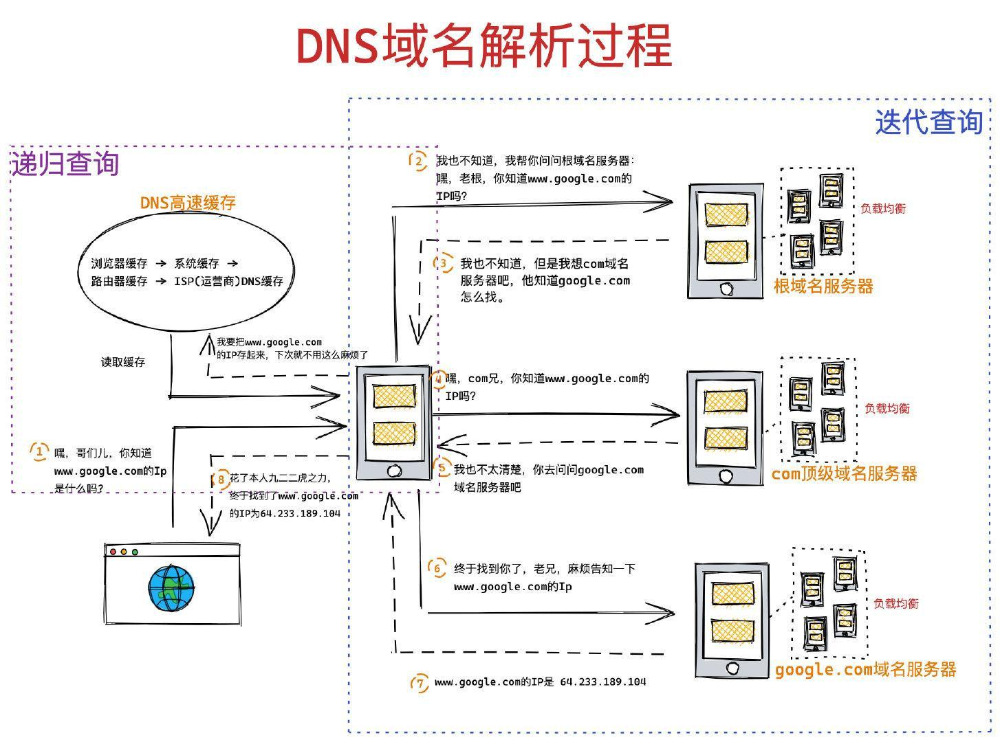
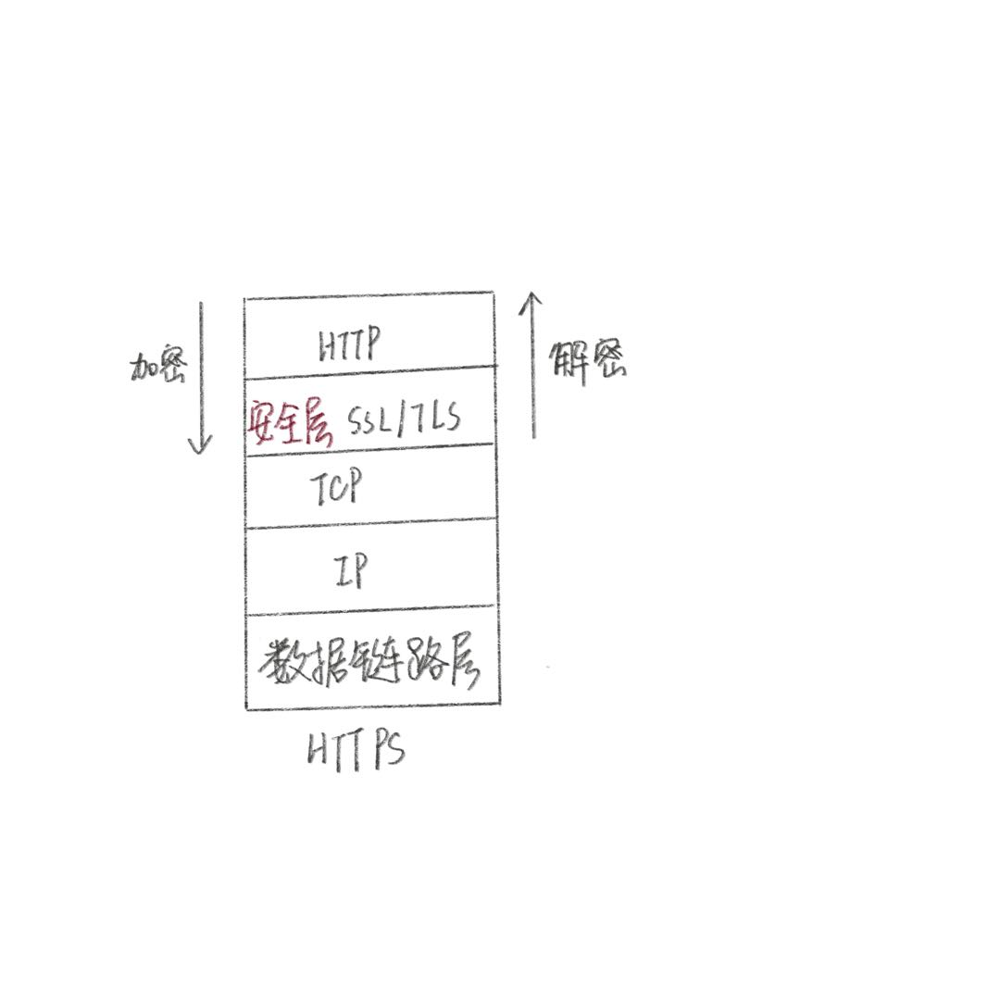

思考：在浏览器中，输入URL回车后发生了什么？
一、URL构建和编码（浏览器进程）
1、用户输入
用户在地址栏输入关键字后，地址栏会首先判断输入的是搜索内容还是请求的URL。如果是搜索内容，则会使用浏览器默认的搜索引擎，合成新的带搜索关键字的URL，如果是地址，则会组装协议（加上http/https之类的）合成完整url，同时进行URL编码。
2、URL编码
一般来说，URL只能使用英文字母、阿拉伯数字和特殊标点符号（如$ - _ . + ! * ' ( ) ,等等）以及某些保留字，不能使用其他文字和符号。如果要使用其他文字和符号，只能经过编码后才能使用。
由于不同的操作系统、不同的浏览器、不同的网页字符集，可能导致完全不同的编码结果，我们最好使用encodeURIComponent（utf-8编码）进行编码。
encodeURIComponent()与encodeURI()的区别是，它用于对URL的组成部分进行个别编码，而不用于对整个URL进行编码。
因此，; / ? : @ & = + $ , #，这些在encodeURI()中不被编码的符号，在encodeURIComponent()中统统会被编码。至于具体的编码方法，两者是一样。
二、URL请求阶段（网络进程）
浏览器进程通过进程间通信（IPC）把URL请求发送至网络进程，网络进程收到URL请求后，会在这里发起真正的URL请求流程。
1、URL解析
浏览器会通过URI和方法来判断“对什么”“进行怎样的操作”，并根据这些要求来完成自己的工作。浏览器是一个具备多种客户端功能的综合性客户端软件，它可以向web服务器发送和接收数据，也可以通过ftp服务器上传下载文件，也可以用于发送电子邮件等等。所以浏览器首先会解析url分析访问的是什么类型的服务器，从而生成发送给该服务器的请求消息。
我们这里只讨论通过URL访问web服务器的情况.
URL基本格式
1 | schema://host[:port#][path][?query-string][#anchor] |
1 | http://www.mywebsite.com/sj/test/test.aspx?name=sviergn&x=true#stuff |
浏览器通过schema得到访问web服务器的底层协议，http或者https等，通过host得到服务器IP地址或者域名，通过port得到连接端口号（http默认80，https默认443），同时得到所访问的资源的路径和锚以及发送给web服务器的数据。
2、HSTS
HSTS(HTTP Strict Transport Security，http严格传输安全)是一种新的Web安全协议，作用是强制客户端使用https与服务器创建连接，以减少会话劫持的风险。
比如你在地址栏输入http://xxx.com，浏览器会先在本地替换为https://xxx.com再发送请求。
缺点
用户首次访问某网站是不受HSTS保护的。这是因为首次访问时，浏览器还未记录HSTS，所以仍发送明文数据，如果这时候被中间人拦截了，就会引发安全问题（不过相对服务器重定向还是好多了，重定向方法每次请求都有可能被攻击）。解决方案是加入preload list，但是加入申请不一定能通过。
浏览器厂商们为了解决这个问题，提出了HSTS Preload List方案：内置一份可以定期更新的列表，对于列表中的域名，即使用户之前没有访问过，也会使用HTTPS协议。
目前这个Preload List由Google Chrome维护，Chrome、Firefox、Safari、IE 11和Microsoft Edge都在使用。
优点
使用HSTS代替301、302重定向，当输入http网址时，只由浏览器来决定重定向至https，而不需服务器端的重定向。
nginx配置也很简单，首先要支持https，然后在nginx.conf加入以下代码，重启nginx即可
1 | server { |
配置了下，发现chrome返回307状态码并自动转换到https了。
3、查找本地缓存
- service worker：如果有service worker的话，service worker会拦截请求，查询是否存在缓存，存在缓存的话就可以直接读取缓存文件，响应200(from service worker)。
- 没有service worker就是我们常规的浏览器缓存机制了。首先看看本地有没有缓存，没有缓存则请求最新数据返回200。
- 强缓存：浏览器会根据
catche-control/expires（catche-control优先级高于expires）检测缓存有没有过期，没有过期就从本地缓存读取数据，返回200。（cache-control根据客户端时间校验新鲜度，expires根据服务器和客户端时间对比校验新鲜度->这会出现服务器时间跟客户端时间不一致导致的问题） - 协商缓存：如果发现已经超过max-age时长了，就走
协商缓存，由服务器判断缓存是否过期。根据之前服务端返回的etag/last-modified等头部信息，生成if-none-match/if-modified-since请求头发送至服务端，判断本地缓存是否过期，过期了服务器只能发送最新数据和新的etag/last-modified，返回200并更新本地缓存，没有过期就还是从本地缓存读取数据返回304。协商缓存之前要经过DNS域名解析，之后建立TCP链接，这些内容将在下面的篇幅中提及。
缓存的存储位置在哪呢？
- service worker(浏览器独立线程进行缓存，离线缓存)
- memory cache(内存缓存)
- disk cache(硬盘缓存)
- push cache(推送缓存,HTTP/2中的)
以上缓存的优先级从上到下、从高到低。
启发式缓存
如果一个可以缓存的请求没有设置Expires和Cache-Control，但是响应头有设置Last-Modified和Date信息，缓存可以使用启发式方法计算新鲜度寿命。通常会根据响应头中的2个时间字段 Date 减去 Last-Modified 值的 10% 作为缓存时间。
1 | // Date 减去 Last-Modified 值的 10% 作为缓存时间。 |
启发式缓存会引起什么问题吗？
考虑一个情况，假设你有一个文件没有设置缓存时间，在一个月前你更新了上个版本。这次发版后，你可能得等到3天后用户才看到新的内容了。如果这个资源还在CDN也缓存了，则问题会更严重。
所以，要给资源设置合理的缓存时间。不要不设置缓存，也不要设置过长时间的缓存。强缓存时间过长，则内容要很久才会覆盖新版本，缓存时间过短，服务器可能背不住。一般带hash的文件缓存时间可以长一点。
设置页面禁止缓存
1 | <meta http-equiv="Cache-Control" content="no-cache, no-store, must-revalidate" /> |
- no-cache : 协商缓存
- no-store : 不缓存
- must-revalidate : 过期强制请求服务器
4、DNS解析
计算机实际是通过IP地址来标记的，DNS服务可将符合人类记忆习惯的域名地址解析为计算机可理解的服务器的IP地址。
DNS解析过程

- 递归查询
我们的浏览器、操作系统、路由器都会缓存一些URL对应的IP地址，统称为DNS高速缓存。这是为了加快DNS解析速度，使得不必每次都到根域名服务器中去查询（这个缓存是有有效期的，过期删除，以提高信息的时效性）。这个查询过程是通过递归查询的方式实现的。
- 首先搜索浏览器自身的DNS缓存，有缓存直接返回。
- 浏览器自身DNS缓存不存在映射关系，浏览器就会调用一个类似
gethostbyname的程序组件（也就是解析器），此组件会先去检测本地hosts文件，查看是否有对应ip。 - 如果本地hosts文件不存在映射关系，就会查询路由缓存。
- 路由缓存不存在该映射就去查找计算机配置的DNS服务器的缓存。（一般TCP/IP参数里会设首选DNS服务器，通常是8.8.8.8）

打开命令行，输入ipconfig /all可以查看本地DNS服务器地址。
- 如果还没找到就会委托本地DNS服务器向根域DNS服务器发出请求。
- 迭代查询
DNS高速缓存查不到只能委托本地DNS服务器去访问各个域名服务器一个一个询问。（可以递归也可以迭代，但一般使用迭代查询）
迭代查询的方式就是，局部的DNS服务器并不会自己向其他服务器进行查询，而是把能够解析该域名的服务器IP地址返回给查询者，查询者会不断的向这些服务器进行查询，直到查询到最终结果，迭代的话只会帮你找到相关的服务器，然后说我现在比较忙，你自己去找吧。
- 本地DNS服务器代我们的浏览器发起迭代DNS解析请求，首先它向根域DNS服务器发起请求（互联网的所有DNS服务器都会保存根域的DNS服务器地址），“请问
www.baidu.com这个域名的IP地址是多少呀？”；（分配给根域DNS服务器的IP地址全球仅13个，它们使用多台服务器对应一个IP地址，所以尽管根域IP地址少，服务器却是很多的。） - 根域根据这个域名的结构发现其属于com域，于是告诉本地DNS服务器“我不知道这个域名的IP地址,但是我知道com域DNS服务器的IP地址，你去找它去吧”；
- 于是本地DNS服务器又向com域DNS服务器发起了请求，“请问
www.baidu.com这个域名的IP地址是多少呀?”,com域DNS服务器告诉本地DNS服务器：“我不知道www.baidu.com这个域名的IP地址，但是我知道baidu这个域的所在的DNS服务器地址，你去找它去”; - …顺藤摸瓜，最后本地DNS服务器找到了目标DNS服务器
- 于是本地DNS服务器又向目标DNS服务器发起请求（请问
www.baidu.com这个域名的IP地址是多少？），这个时候目标DNS服务器一查，“呀！果真在我这耶”，于是就把找到的结果发送给本地DNS服务器; - 这个时候本地DNS服务器就拿到了
www.baidu.com这个域名对应的IP地址，将结果返回给解析器，解析器将结果写入操作系统内存空间，给浏览器读取。
以上展示的是基本原理。在真实的互联网中，一台DNS服务器可以管理多个域的信息，因此不是像上面那样每个域都有自己的DNS服务器，现实中上级域和下级域有可能共享一台DNS服务器，在这种情况下，访问上级DNS服务器时就可以向下跳过一级DNS服务器，直接返回再下一级的DNS服务器的相关信息。
DNS优化
DNS也是开销，通常浏览器查找一个给定域名的IP地址要花费20~120毫秒。
在完成域名解析之前，浏览器不能从服务器加载到任何东西。那么如何减少域名解析时间，加快页面加载速度呢？
减少DNS请求次数。最理想的方法就是将所有的内容资源（页面、脚本、样式表、图片等）都放在同一个域(Domain)下面，这样访问整个网站就只需要进行一次DNS查找，这样可以提高性能。DNS预获取。DOM还没开始，浏览器预解析地址，把解析好的地址放在本地缓存里面，DOM树生成完，要加载图片类的发现DNS已经解析好了，再发送请求。主要用于图片资源等。1
<link rel='dns-prefetch' href='//dfns.tanx.com'> // 此代码预获取dfns.tanx.com这个域名的IP地址
利用
DNS负载均衡技术。一个网站如果只有一个服务器，访问量过大时很容易挂掉。DNS负载均衡技术的实现原理是在DNS服务器中为同一个主机名配置多个IP地址，在应答DNS查询时，DNS服务器会根据每台机器的负载量、与用户的距离等情况返回不同的解析结果，将客户端的访问引导到不同的机器上去，使得不同的客户端访问不同的服务器，从而达到负载均衡的目的。该技术常见的应用是CDN（Content Delivery Network）。
扩展知识
网络号和主机号以及子网掩码
IP地址是一串32位的数字，按照8比特（1字节）为一组分成4组，分别用十进制标识然后再用圆点隔开。
IP地址由网络号和主机号组成，加起来总共32位，但这两部分的具体结构是不固定的。在组建网络时，用户可以自行决定他们直接的分配关系，因此，我们还需要另外的附加信息（子网掩码）来表示IP地址的内部结构。
子网掩码32位（与IP地址相同），左边部分为1，右边部分为0，其中子网掩码为1的部分表示网络号，为0的部分表示主机号。举个例子，子网掩码255.255.255.0，255的二进制为八个1，此处3个255，即IP地址前24位为网络号，后8位为主机号。
主机号部分的比特全部为0或者全部为1时代表两种特殊的含义。全为0代表整个子网而不是子网中的某台设备，全为1代表向子网上所有设备发送包，即广播。
5、TCP握手建立连接
知道了IP地址之后，就可以委托操作系统内部的协议栈向这个目标IP地址，也就是我们要访问的Web服务器发送消息了。
浏览器与服务器通过3次握手建立连接。

TCP协议是面向连接、面向字节流、支持双全工、支持并发连接、提供确认重传与拥塞控制的可靠传输层协议。
TCP握手过程可以发送数据吗？
其实第三次握手的时候，是可以携带数据的。但是，第一次、第二次握手不可以携带数据。
为什么这样呢?大家可以想一个问题，假如第一次握手可以携带数据的话，如果有人要恶意攻击服务器，那他每次都在第一次握手中的SYN报文中放入大量的数据。因为攻击者根本就不理服务器的接收、发送能力是否正常，然后疯狂着重复发SYN报文的话，这会让服务器花费很多时间、内存空间来接收这些报文。
也就是说，第一次握手不可以放数据，其中一个简单的原因就是会让服务器更加容易受到攻击了。而对于第三次的话，此时客户端已经处于ESTABLISHED状态。对于客户端来说，他已经建立起连接了，并且也已经知道服务器的接收、发送能力是正常的了，所以能携带数据也没啥毛病。
为什么不能是两次握手？
三次握手是为了确认双方都有接收和发送数据的能力（TCP特点：双全工、可靠）。
假设两次握手，客户端要是没有收到服务端的响应，就重新发了一个包请求连接，这时候服务端收到了就发送响应连接成功。第一个包可能由于网络延迟终于送到服务器这边了，这时服务端以为客户端又想连接了就同意连接，发送第二次握手，客户端一看这不是我上次发的失效包吗？不理它，服务端却以为连接成功了，一直等待客户端发送数据，浪费资源。
SYN攻击
服务器端的资源分配是在二次握手时分配的，而客户端的资源是在完成三次握手时分配的，所以服务器容易受到SYN洪泛攻击。SYN攻击就是Client在短时间内伪造大量不存在的IP地址，并向Server不断地发送SYN包，Server则回复确认包，并等待Client确认，由于源地址不存在，因此Server需要不断重发直至超时，这些伪造的SYN包将长时间占用未连接队列，导致正常的SYN请求因为队列满而被丢弃，从而引起网络拥塞甚至系统瘫痪。SYN攻击是一种典型的DoS/DDoS攻击。
检测 SYN 攻击非常的方便，当你在服务器上看到大量的半连接状态时，特别是源IP地址是随机的，基本上可以断定这是一次SYN攻击。在 Linux/Unix 上可以使用系统自带的 netstats 命令来检测 SYN 攻击。
1 | netstat -n -p TCP | grep SYN_RECV |
常见的防御 SYN 攻击的方法有如下几种：
- 缩短超时（SYN Timeout）时间
- 增加最大半连接数
- 过滤网关防护
- SYN cookies技术
扩展知识
- tcp提供可靠的传输服务，它是怎么保证传输的可靠性的？
Keywords： tcp滑动窗口与流量控制；确认重传机制；拥塞窗口与拥塞控制；大文件拆分和数据包排序机制；
- 通过序列号和确认应答信号确保了数据不会重复发送和重复接收。
- 同时通过超时重发控制保证即使数据包在传输过程中丢失，也能重发保持数据完整。
- 通过三次握手，四次挥手建立和关闭连接的连接管理保证了端对端的通信可靠性。
- TCP还使用了滑动窗口控制提高了数据传输效率
tcp如何通过滑动窗口进行流量控制？
接收方每次收到数据包，可以在发送确定报文的时候，同时告诉发送方自己的缓存区还剩余多少是空闲的，我们也把缓存区的剩余大小称之为接收窗口大小，用变量win来表示接收窗口的大小。
发送方收到之后，便会调整自己的发送速率，也就是调整自己发送窗口的大小，当发送方收到接收窗口的大小为0时，发送方就会停止发送数据，防止出现大量丢包情况的发生。
通俗易懂讲解TCP流量控制机制，了解一下
TCP流量控制、拥塞控制tcp如何进行拥塞控制？
keywords： 慢启动、拥塞避免、快重传
图解拥塞控制，这应该是把拥塞控制讲的最通俗易懂的文章了
- udp和tcp的区别？
像浏览器、邮件等一般的应用程序都是使用TCP收发数据的，而像DNS查询等收发较短的控制数据的时候则使用UDP。
UDP（用户数据报协议）是无连接的，尽最大可能交付，没有拥塞控制，面向报文（对于应用程序传下来的报文不合并也不拆分，只是添加 UDP 首部），支持一对一、一对多、多对一和多对多的交互通信。
TCP（传输控制协议）是面向连接的，提供可靠交付，有流量控制，拥塞控制，提供全双工通信，面向字节流（把应用层传下来的报文看成字节流，把字节流组织成大小不等的数据块），每一条 TCP 连接只能是点对点的（一对一）。
6、HTTPS的SSL/TLS握手（4次握手）
现在很多网站都用上了https，我们知道，http是明文传输的，这意味着传输内容很容易被中间人窃取或者篡改。具体来讲，在将 HTTP 数据提交给 TCP 层之后，数据会经过用户电脑、WiFi 路由器、运营商和目标服务器，在这中间的每个环节中，数据都有可能被窃取或篡改。比如用户电脑被黑客安装了恶意软件，那么恶意软件就能抓取和篡改所发出的 HTTP 请求的内容。或者用户一不小心连接上了 WiFi 钓鱼路由器，那么数据也都能被黑客抓取或篡改。
https相比http，多了一层数据加密，具有防止窃听、防止篡改、防止伪装的特点。

需预备知识：非对称加密、对称加密、数字签名。
这里简单解释下过程，服务器去申请CA证书的时候会得到数字证书（内含公钥1）和私钥1，当浏览器发送请求时，服务器会返回数字证书，浏览器验证证书的合法性后，利用证书内的公钥1加密本地生成的会话密钥，发送给服务器，服务器用私钥1解密得到该会话密钥，这下双方就可以用会话密钥对称加密数据来通信了。
从以上过程可以看出，https只有在握手的时候使用非对称加密，通信过程使用的是对称加密。
为什么握手过程使用非对称加密？
假设握手过程使用对称加密，中间人可以拦截到证书和公钥1，既可以取得客户端信任又能用公钥1破解出会话密钥，接下来破解通信内容就易如反掌了。
为什么通信却用对称加密呢？
非对称加密的加解密效率非常低，既然已经验证了服务器的合法性建立了连接，就没必要用非对称加密拉低效率了。另外，在 HTTPS 的场景中只有服务端保存了私钥，一对公私钥只能实现单向的加解密，所以 HTTPS 中内容传输加密采取的是对称加密，而不是非对称加密。
为什么需要 CA 认证机构颁发证书？
CA证书相当于我们买房子时候发的房产证，房产证有权威机构（国家）进行背书，大家都信任国家，相信拿了这个证这个房子就是自己的。
首先，权威机构是要有认证的，不是随便一个机构都有资格颁发证书，不然也不叫做权威机构。
另外，证书的可信性基于信任制，权威机构需要对其颁发的证书进行信用背书，只要是权威机构生成的证书，我们就认为是合法的。
所以权威机构会对申请者的信息进行审核，不同等级的权威机构对审核的要求也不一样，于是证书也分为免费的、便宜的和贵的。
如何申请数字证书？
我们先来看看如何向 CA 申请证书。比如极客时间需要向某个 CA 去申请数字证书，通常的申请流程分以下几步：
- 首先极客时间需要准备一套私钥和公钥，私钥留着自己使用；
- 然后极客时间向 CA 机构提交公钥、公司、站点等信息并等待认证，这个认证过程可能是收费的；
- CA 通过线上、线下等多种渠道来验证极客时间所提供信息的真实性，如公司是否存在、企业是否合法、域名是否归属该企业等；
- 如信息审核通过，CA 会向极客时间签发认证的数字证书，包含了极客时间的公钥、组织信息、CA 的信息、有效时间、证书序列号等，这些信息都是明文的，同时包含一个 CA 生成的签名。
这样我们就完成了极客时间数字证书的申请过程。前面几步都很好理解，不过最后一步数字签名的过程还需要解释下：首先 CA 使用 Hash 函数来计算极客时间提交的明文信息，并得出信息摘要；然后 CA 再使用它的私钥对信息摘要进行加密，加密后的密文就是 CA 颁给极客时间的数字签名。这就相当于房管局在房产证上盖的章，这个章是可以去验证的，同样我们也可以通过数字签名来验证是否是该 CA 颁发的。
用证书怎么验证合法？
浏览器发起 HTTPS 请求时，服务器会返回网站的 SSL 证书，浏览器需要对证书做以下验证：
- 验证域名、有效期等明文信息是否正确。证书上都有包含这些信息，比较容易完成验证；
- 判断证书来源是否合法。每份签发证书都可以根据验证链查找到对应的根证书，操作系统、浏览器会在本地存储权威机构的根证书，利用本地根证书可以对对应机构签发证书完成来源验证；
- 判断证书是否被篡改。需要与 CA 服务器进行校验。首先浏览器读取证书中相关的明文信息，采用 CA 签名时相同的 Hash 函数来计算并得到信息摘要 A；然后再利用对应 CA 的公钥解密签名数据，得到信息摘要 B；对比信息摘要 A 和信息摘要 B，如果一致，则可以确认证书是合法的，即证明了这个服务器是正确的；
- 判断证书是否已吊销。通过CRL（Certificate Revocation List 证书注销列表）和 OCSP（Online Certificate Status Protocol 在线证书状态协议）实现，其中 OCSP 可用于第3步中以减少与 CA 服务器的交互，提高验证效率
以上任意一步都满足的情况下浏览器才认为证书是合法的。
综上所述，这个证书也伪造不了，人家直接去问权威机构这证书是不是他们颁布的了。
本地会话密钥被窃取怎么办？
证书验证是采用非对称加密实现，但是传输过程是采用对称加密，而其中对称加密算法中重要的随机数是由本地生成并且存储于本地的，HTTPS 如何保证随机数不会被窃取？
其实 HTTPS 并不包含对随机数的安全保证，HTTPS 保证的只是传输过程安全，而随机数存储于本地，本地的安全属于另一安全范畴，应对的措施有安装杀毒软件、反木马、浏览器升级修复漏洞等。
7、构建请求报文
前面浏览器已经解析了URL，现在需要浏览器通过解析的结果生成http请求报文。直接在浏览器地址栏输入URL访问网页是GET方法。
尽管浏览器能够解析网址并生成HTTP消息，但它本身并不具备将消息发送到网络中的功能，所以生成HTTP消息之后，接下来我们需要委托操作系统将消息发送给web服务器。在发送之前，我们还需要查询服务器域名对应的IP地址。
8、发送请求
浏览器不负责请求的网络传输过程，这个过程交由操作系统负责。
TCP/IP网络模型
应用层： 浏览器生成http请求报文，DNS解析域名。
传输层： 负责数据的传输。将从浏览器接收到的消息打包，切割为报文段，并在各个报文上标记目的地址等控制信息，然后，网卡会将报文段转换为电信号并通过网线发送出去。
网络层： 接入互联网。IP协议通过ip地址查找MAC地址（ARP协议，解析地址，根据通信方的ip地址反查出对应的MAC地址），在各个路由中间进行路由中转传送数据。
网络接口层： 规定了与物理网络的接口。
从网卡把数据包传输出去到服务器发生了什么？
参考TCP/IP模型
9、服务器处理请求并响应请求
服务器端收到请求后由web server处理请求，常见的web server产品有Apache、Ngnix、IIS等。
大概就是处理特殊响应码，301（永久重定向）或者 302（临时重定向） 重定向。或者反向代理。然后解析用户请求，了解了要调度哪些资源文件，再通过响应的资源文件处理用户请求和参数，并调用数据库信息，最后将结果通过web服务器返回给浏览器客户端。
然后发送出响应报文，再走一遍传输过程（应用层 -> 传输层 -> 网络层 -> 网络接口层）。
10、响应数据处理
状态码301和302：重定向
301重定向是永久的重定向，搜索引擎在抓取新内容的同时也将旧的网址替换为重定向之后的网址。
302重定向是临时的重定向，搜索引擎会抓取新的内容而保留旧的网址。因为服务器返回302代码，搜索引擎认为新的网址只是暂时的。
响应数据类型处理
若状态码200，会通过响应的数据类型判断其中的内容。
Content-Type、charset、Content-Encoding等等响应头字段可以帮助浏览器判断响应内容的数据类型。对于HTML文档、纯文本、图片这些基本数据类型，浏览器自身具有显示这些内容的功能，因此由浏览器自身负责显示。比如 content-type 的值是“text/html”，那么浏览器会继续进行导航流程；如果是“applcaton/octet-steam”，那么该请求会被提交给浏览器的下载管理器，同时该URL请求的导航流程就此结束。
11、准备渲染进程
多进程的浏览器
浏览器是多进程的，有一个主控进程，每一个tab页面都会新开一个渲染进程（某些情况下多个tab会共用一个渲染进程，比如同站点的A、B页面，从A页面打开B页面时候B会复用A的渲染进程）。
主要包括浏览器进程，插件进程，GPU进程，渲染进程、网络进程等等多线程的浏览器内核
每一个tab页面可以看作是浏览器内核进程，然后这个进程是多线程的，它有几大类子线程：
JS引擎线程
GUI渲染线程
事件触发线程
定时器触发线程
异步http请求线程注意，GUI渲染线程与JS引擎线程是互斥的，当JS引擎执行时GUI线程会被挂起（相当于被冻结了），GUI更新会被保存在一个队列中等到JS引擎空闲时立即被执行
12、提交文档（网络进程 -> 渲染进程）
浏览器准备好渲染进程后，由于此时文档数据还在网络进程中，并没有提交给渲染进程，所以下一步就进入了提交文档阶段。
- 浏览器进程接收到网络进程的响应头数据之后，便向渲染进程发起“提交文档”的消息。
- 渲染进程收到消息后，会和网络进程建立传输输入的“管道”。
- 等文档数据传输完成后，渲染进程会返回“确认提交”的消息给浏览器进程。
- 浏览器进程收到消息后，会更新浏览器页面状态，包括了安全状态、地址栏的URL、前进后退的历史状态，并更新web页面。（这也就是为什么输入地址后回车，前一个页面并没有马上消失，而是要加载一会儿才会更新页面）
三、页面渲染阶段
渲染进程准备好之后，网络进程和渲染进程之间会建立一个共享数据的管道，网络进程接收到数据后就往这个管道里面放，而渲染进程则从管道的另外一端不断地读取数据，并同时将读取的数据“喂”给 HTML 解析器。你可以把这个管道想象成一个“水管”，网络进程接收到的字节流像水一样倒进这个“水管”，而“水管”的另外一端是渲染进程的 HTML。
Chrome 的默认策略是，每个标签对应一个渲染进程。但如果从一个页面打开了另一个新页面，而新页面和当前页面属于同一站点的话，那么新页面会复用父页面的渲染进程。官方把这个默认策略叫 process-per-site-instance。
1、构建DOM树
自上而下解析html文档，调用HTML解析器（HTMLParser）生成DOM节点树（DOM树，也叫内容树），如果包含图片等外部资源信息，浏览器会交给网络进程去下载，如果解析到script标签，渲染引擎判断这是一段脚本或者需要去下载脚本，此时HTML解析器就会暂停DOM的解析，因为接下来的JavaScript可能要修改当前已经生成的 DOM 结构，等脚本下载后调用调用javascript解析器处理，等执行完毕才会继续解析DOM。（注意HTML解析器并不是等整个文档加载完成之后再解析的，而是网络进程加载了多少数据，HTML 解析器便解析多少数据）
详细过程：Bytes（字节） → Characters（字符） → Tokens（令牌） → Nodes（节点） → DOM（对象模型）
字节转换为字符：浏览器拿到文件后由HTML解析器（拿到的是一些
字节码）通过编码方式（一般是utf-8）转换为对应的字符（utf-8编码下，中文字符占3个字节、英文字符占1字节）。分词（词法分析）：浏览器按照HTML规范标准将这些字符转换为不同的标记token。每个token都有自己独特的含义以及规则集。Token分为Tag Token和文本Token。对应我们的起始标签、终止标签、和文本内容。
生成DOM节点并添加到DOM树中：
HTML解析器维护了一个Token栈结构，该Token栈主要用来计算节点之间的父子关系，在第一个阶段中生成的Token会被按照顺序压到这个栈中。具体的处理规则如下所示：
- 如果压入到栈中的是StartTag Token，HTML解析器会为该Token创建一个DOM节点，然后将该节点加入到DOM树中，它的父节点就是栈中相邻的那个元素生成的节点。
- 如果分词器解析出来是文本Token，那么会生成一个文本节点，然后将该节点加入到DOM树中，文本Token是不需要压入到栈中，它的父节点就是当前栈顶Token所对应的 DOM 节点。
- 如果分词器解析出来的是EndTag标签，比如是EndTag div，HTML解析器会查看Token栈顶的元素是否是StarTag div，如果是，就将StartTag div从栈中弹出，表示该div元素解析完成。
这里需要补充说明下，HTML 解析器开始工作时，会默认创建了一个根为 document 的空 DOM 结构，同时会将一个 StartTag document 的 Token 压入栈底。然后经过分词器解析出来的第一个 StartTag html Token 会被压入到栈中，并创建一个 html 的 DOM 节点，添加到 document 上
2、样式计算
遇link/style标记，调用CSS解析器生成CSS规则树。
和DOM一样，CSSOM也具有两个作用，第一个是提供给JavaScript操作样式表的能力，第二个是为布局树的合成提供基础的样式信息。这个CSSOM体现在DOM中就是document.styleSheets。
详细过程：
- 把 CSS 转换为浏览器能够理解的结构
styleSheets。 - 转换样式表中的属性值，使其标准化，从而容易被渲染引擎理解。

- 计算出 DOM 树中每个节点的具体样式，涉及到 CSS 的继承规则和层叠规则。
3、布局阶段
接下来就需要计算出 DOM 树中可见元素的几何位置，我们把这个计算过程叫做布局。
详细过程：
- 创建布局树

为了构建布局树，浏览器大体上完成了下面这些工作：遍历 DOM 树中的所有可见节点，并把这些节点加到布局树中；而不可见的节点会被布局树忽略掉，如 head 标签下面的全部内容，再比如 body.p.span 这个元素，因为它的属性包含 dispaly:none，所以这个元素也没有被包进布局树。 - 布局计算
计算布局树节点的坐标位置，在执行布局操作的时候，会把布局运算的结果重新写回布局树中。4、分层
页面中有很多复杂的效果，如一些复杂的 3D 变换、页面滚动，或者使用 z-indexing 做 z 轴排序等，为了更加方便地实现这些效果，渲染引擎还需要为特定的节点生成专用的图层，并生成一棵对应的图层树（LayerTree）。
通常情况下，并不是布局树的每个节点都包含一个图层，如果一个节点没有对应的层，那么这个节点就从属于父节点的图层。5、生成绘制指令
渲染引擎会把一个图层的绘制拆分成很多小的绘制指令，然后再把这些指令按照顺序组成一个待绘制列表。
6、分块
绘制列表只是用来记录绘制顺序和绘制指令的列表，而实际上绘制操作是由渲染引擎中的合成线程来完成的。当图层的绘制列表准备好之后，主线程会把该绘制列表提交（commit）给合成线程。
在有些情况下，有的图层可以很大，比如有的页面你使用滚动条要滚动好久才能滚动到底部，但是通过视口，用户只能看到页面的很小一部分，所以在这种情况下，要绘制出所有图层内容的话，就会产生太大的开销，而且也没有必要。基于这个原因，合成线程会将图层划分为图块（tile），这些图块的大小通常是 256x256 或者 512x512。7、光栅化（栅格化）
合成线程会按照视口附近的图块来优先生成位图，实际生成位图的操作是由栅格化来执行的。所谓栅格化，是指将图块转换为位图。而图块是栅格化执行的最小单位。渲染进程维护了一个栅格化的线程池，所有的图块栅格化都是在线程池内执行的。
通常，栅格化过程都会使用 GPU 来加速生成，使用 GPU 生成位图的过程叫快速栅格化，或者 GPU 栅格化，生成的位图被保存在 GPU 内存中。8、 合成和显示
一旦所有图块都被光栅化，合成线程就会生成一个绘制图块的命令——“DrawQuad”，然后将该命令提交给浏览器进程。浏览器进程里面有一个叫 viz 的组件，用来接收合成线程发过来的 DrawQuad 命令，然后根据 DrawQuad 命令，将其页面内容绘制到内存中，最后再将内存显示在屏幕上。JS和CSS会不会阻塞DOM树的构建？如何阻塞？
当浏览器遇到一个script标记时，DOM构建将暂停，直至脚本完成执行，然后继续构建DOM。每次去执行JavaScript脚本都会严重地阻塞DOM树的构建。在执行 JavaScript 脚本之前，如果页面中包含了外部 CSS 文件的引用，或者通过 style 标签内置了 CSS 内容，那么渲染引擎还需要将这些内容转换为 CSSOM，因为 JavaScript 有修改 CSSOM 的能力，所以在执行 JavaScript 之前，还需要依赖 CSSOM。也就是说 CSS 在部分情况下也会阻塞 DOM 的生成。
如何在渲染过程中进行优化？
- js放body底部，尽量不阻塞DOM构建。
- 如果 JavaScript 文件中没有操作DOM相关代码，就可以将该JavaScript脚本设置为异步加载，通过async或defer来标记代码。
async和defer虽然都是异步的，不过还有一些差异，使用async标志的脚本文件一旦加载完成，会停止HTML解析器的工作并立即执行脚本；而使用了defer标记的脚本文件，需要在DOMContentLoaded事件之前执行。
多个defer脚本会按顺序从上到下执行；
多个async脚本会按下载完成时间执行，先下载完毕先执行；1
2<script async type="text/javascript" src='foo.js'></script>
<script defer type="text/javascript" src='foo.js'></script> - 精简css，css放head中，首先css本身是不会阻塞DOM树的生成的，除非执行js，所以我们将css放在head中加载，还要把css放在js上面，这样js加载时css大概率已经加载完成了，不会阻塞js执行，也就不会阻塞DOM构建。
- css尽量使用id和class，不要过度层叠。查找样式表是按照从右到左的顺序去匹配的，例如，div p {font-size: 16px}，会先寻找所有p标签并判断它的父标签是否为div之后才会决定要不要采用这个样式进行渲染）。
- 压缩文件大小。
- 使用CDN。
- 对于大的CSS文件，可以通过媒体查询属性，将其拆分为多个不同用途的CSS文件，这样只有在特定的场景下才会加载特定的 CSS 文件。
- 减少重绘和重排。特别是重排，因为重排一定会触发重绘。具体如基于vue/react等框架开发（虚拟dom和diff算法减少了重绘和重排）；样式集中改变（利用当代浏览器的渲染队列机制将修改样式的代码写在一起，代码中间不要穿插无关样式修改的代码）；样式批量修改（如使用classname改变样式，或者box.style.cssText）；样式读写分开；利用document.createDocumentFragment生成文档碎片批量插入dom元素或利用document.innerHTML插入多个dom string；动画效果应用到position属性为absolute/fixed元素上（脱离文档流，减少对其他元素的影响）；利用css3硬件加速（transform、opacity、filters，触发硬件加速，不触发重绘重排）；尽量避免table布局（不好计算位置和大小）等等
九、TCP断开连接
connection: keep-alive并不会马上断开连接哦。除非有一方发送connection: close

为什么分手后客户端要等待2个最长报文寿命MSL时间后，才真正进入“CLOSE”状态？
两个原因：
- 确保服务器在最后阶段发送给客户端的数据，以及客户端发送给服务器的最后一个“ACK”报文都能正确地被接收，防止因个别报文传输错误导致连接释放失败。
如果最后一个ACK报文丢失，服务器端会重新传FIN报文，客户端收到后重新发送ACK报文。 - 防止“已失效的连接请求报文段”出现在本连接中。
客户端在发送完最后一个ACK报文段后，再经过2MSL，就可以使本连接持续的时间内所产生的所有报文段都从网络中消失，使下一个新的连接中不会出现这种旧的连接请求报文段。
浏览器每个请求都需要建立tcp连接吗？
在 HTTP/1.0 中，一个服务器在发送完一个 HTTP 响应后，会断开 TCP 链接。但是这样每次请求都会重新建立和断开 TCP 连接，代价过大。所以虽然标准中没有设定，某些服务器对 Connection: keep-alive 的 Header 进行了支持。意思是说，完成这个 HTTP 请求之后，不要断开 HTTP 请求使用的 TCP 连接。这样的好处是连接可以被重新使用，之后发送 HTTP 请求的时候不需要重新建立 TCP 连接，以及如果维持连接，那么 SSL 的开销也可以避免。既然维持 TCP 连接好处这么多，HTTP/1.1 就把 Connection 头写进标准，并且默认开启持久连接，除非请求中写明 Connection: close，那么浏览器和服务器之间是会维持一段时间的 TCP 连接，不会一个请求结束就断掉。
HTTP keep-alive和TCP keepalive的区别，你了解吗？
一个tcp连接中的http请求可以同时发送吗？
HTTP/1.1 存在一个问题，单个 TCP 连接在同一时刻只能处理一个请求，意思是说：两个请求的生命周期不能重叠，任意两个 HTTP 请求从开始到结束的时间在同一个 TCP 连接里不能重叠。
虽然 HTTP/1.1 规范中规定了 Pipelining 来试图解决这个问题，但是这个功能在浏览器中默认是关闭的。
HTTP2 提供了 Multiplexing 多路传输特性，可以在一个 TCP 连接中同时完成多个 HTTP 请求。至于 Multiplexing 具体怎么实现的就是另一个问题了。
浏览器对同一Host建立TCP连接到数量有没有限制？
Chrome最多允许对同一个Host建立6个TCP连接
你猜一个 TCP 连接上面能发多少个 HTTP 请求
疯了吧！面试官 5 连问一个 TCP 连接可以发多少个 HTTP 请求？
【参考】